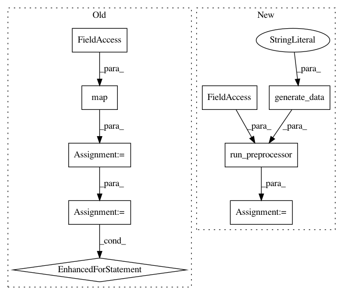

a0351c62548ebddf5c728ec525ad61a4f7827494,tests/hypermodel/test_preprocessor.py,,test_sequence,#,51
Before Change
inp=[x],
Tout=(tf.int64,))
new_dataset = dataset.map(map_func)
for _ in new_dataset:
pass
assert isinstance(new_dataset, tf.data.Dataset)
def test_ngram():
After Change
"The dog sat on the log.",
"Dogs and cats living together."]
dataset = tf.data.Dataset.from_tensor_slices(texts)
new_dataset = run_preprocessor(preprocessor.TextToIntSequence(),
dataset,
common.generate_data(dtype="dataset"),
tf.int64)
assert isinstance(new_dataset, tf.data.Dataset)
def test_ngram():
In pattern: SUPERPATTERN
Frequency: 4
Non-data size: 9
Instances
Project Name: keras-team/autokeras
Commit Name: a0351c62548ebddf5c728ec525ad61a4f7827494
Time: 2019-09-29
Author: jhfjhfj1@gmail.com
File Name: tests/hypermodel/test_preprocessor.py
Class Name:
Method Name: test_sequence
Project Name: keras-team/autokeras
Commit Name: a0351c62548ebddf5c728ec525ad61a4f7827494
Time: 2019-09-29
Author: jhfjhfj1@gmail.com
File Name: tests/hypermodel/test_preprocessor.py
Class Name:
Method Name: test_normalize
Project Name: keras-team/autokeras
Commit Name: a0351c62548ebddf5c728ec525ad61a4f7827494
Time: 2019-09-29
Author: jhfjhfj1@gmail.com
File Name: tests/hypermodel/test_preprocessor.py
Class Name:
Method Name: test_augment
Project Name: keras-team/autokeras
Commit Name: a0351c62548ebddf5c728ec525ad61a4f7827494
Time: 2019-09-29
Author: jhfjhfj1@gmail.com
File Name: tests/hypermodel/test_preprocessor.py
Class Name:
Method Name: test_ngram